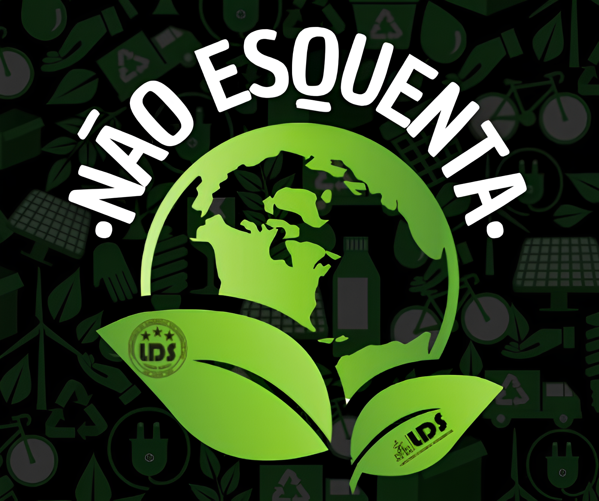

Projetos em Destaque

Ativo
NÃO ESQUENTA!
Projeto focado na mitigação dos efeitos das mudanças climáticas em Itacoatiara, promovendo soluções sustentáveis para reduzir a temperatura ambiente.
Saiba mais
Ativo
ECOCOMUNIDADE
Iniciativa que promove práticas sustentáveis e educação ambiental em comunidades locais, transformando a relação entre pessoas e meio ambiente.
Saiba mais